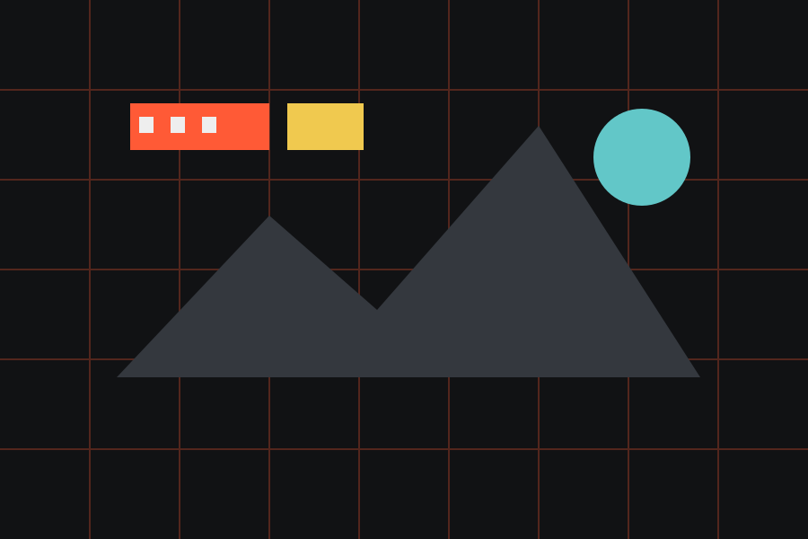
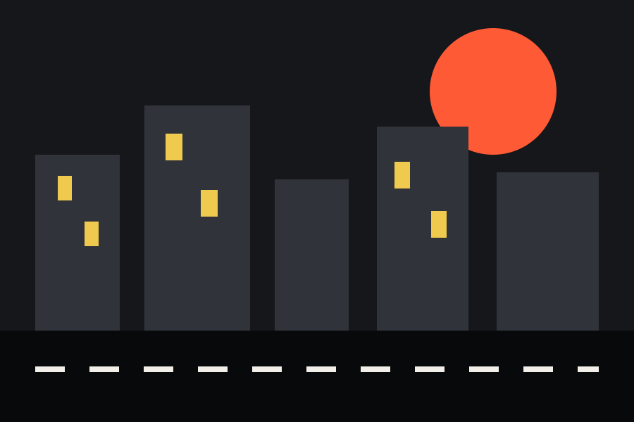
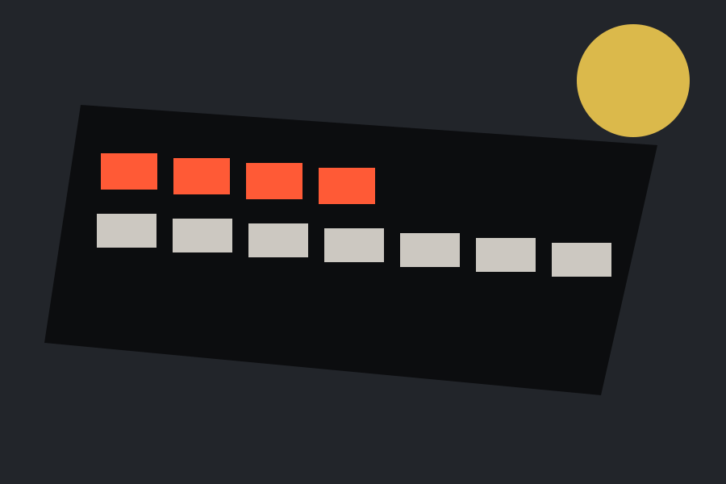

Corrida
8,6Neon Apex encontra ritmo entre velocidade e precisão
Direção firme, pistas legíveis e partidas curtas fazem o jogo funcionar bem sem abandonar quem gosta de ajustar cada detalhe.
PCPS5
Notas servem como atalho. O texto explica o resto: ritmo, mecânicas, apresentação, desempenho e para quem cada jogo pode funcionar.
Direção firme, pistas legíveis e partidas curtas fazem o jogo funcionar bem sem abandonar quem gosta de ajustar cada detalhe.
Exploração recompensadora e um mundo que evita excesso de explicações são os pontos mais fortes desta aventura.

Curto, direto e visualmente marcante. A repetição aparece no fim, mas não apaga uma boa estreia.

A cidade é ótima de explorar, mas a quantidade de objetivos paralelos enfraquece parte do mistério.
Fases compactas, reinício rápido e bons atalhos fazem dele um jogo muito confortável para levar na mochila.

Menus claros e decisões pequenas que se acumulam criam uma experiência de estratégia difícil de largar.
A escala vai de 0 a 10 e é usada apenas para resumir a experiência descrita no texto. A nota não substitui a análise e não tenta afirmar que um jogo é “objetivamente” melhor que outro.